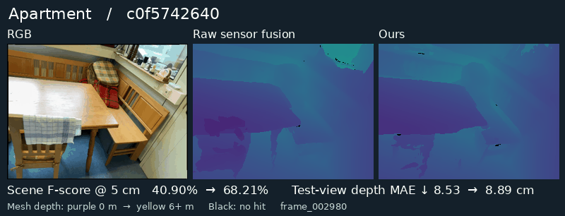
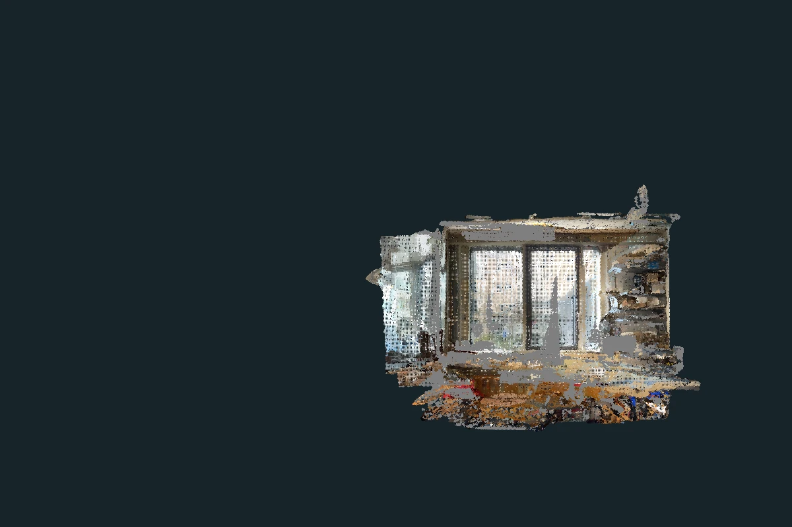
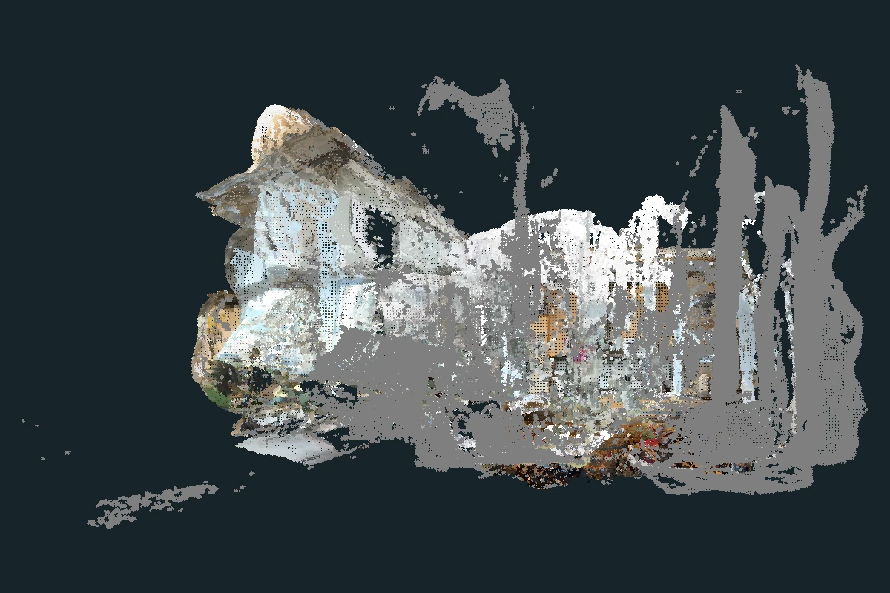
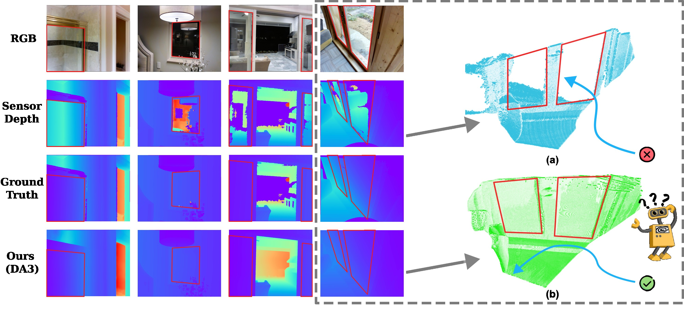

IROS 2026
Enhancing Glass Surface Reconstruction via Depth Prior for Robot Navigation
An RGB-D camera can measure the room beyond a glass door and leave the door out of the map. GlassRecon uses the RGB image and nearby depth measurements to recover the glass surface.
Shenzhen Key Laboratory of Robotics and Computer Vision, Southern University of Science and Technology
Jingwen Yu is also with the CKS Robotics Institute, Hong Kong University of Science and Technology.
* Equal contribution · † Corresponding author
RGB and rendered depth
Follow the camera through three ScanNet++ scenes. Each RGB frame is paired with depth rendered from the raw-sensor mesh in the middle and the GlassRecon mesh on the right.


ScanNet++ Reconstruction Explorer
Choose a scene and drag the divider, or use the arrow keys. Full scene and Glass detail compare colored point clouds. Depth map compares the sensor measurement and the aligned prediction for the Glass detail frame.

GlassRecon (ours)
Raw sensorSensor measurement (left) and GlassRecon’s scale-aligned DA3-LARGE prediction (right) for the same RGB frame, before fusion. The office frame was held out of the reconstruction experiment. Its prediction was generated separately for this view.
Both point clouds use the same RGB frames, COLMAP poses and nvblox settings. Each pair of views shares a camera and scale.
Method
-
Predict relative depth
DA3-LARGE takes each RGB frame and predicts the relative depth of surfaces in the scene.
-
Recover metric scale
GlassRecon samples patches of valid sensor depth. A RANSAC-based fit selects a scale and shift that agree with measurements across the frame.
-
Fuse the sequence
In the ScanNet++ runs, GlassRecon refines depth over five frames. nvblox fuses the metric depths and RGB using the supplied COLMAP poses.
Apartment reconstruction video

GlassRecon dataset
The benchmark contains 917 indoor RGB-D images with glass masks, camera intrinsics and reference depths. We fit planes to annotated points on surfaces such as window frames to recover depth inside each glass mask.


Citation
@article{zheng2026enhancing,
title={Enhancing Glass Surface Reconstruction via Depth Prior for Robot Navigation},
author={Zheng, Jiamin and Yu, Jingwen and Chen, Guangcheng and Zhang, Hong},
journal={arXiv preprint arXiv:2604.18336},
year={2026}
}